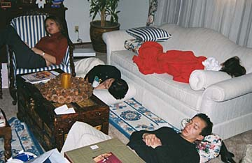

THE BUG: It wasn't Y2K but the L2K (Laico2K) that struck quite a number of family members during the reunion, causing bouts of fever, nausea, vomiting and diarrhea. Supposedly it was flu season in California. But it could have also been too much cheek to cheek kissing, exhaustion, overeating, or bad pancit. Next time, don't leave home without the Imodium.